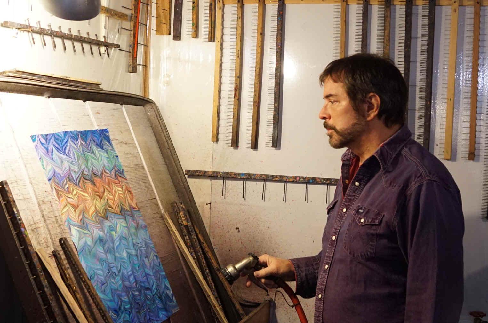
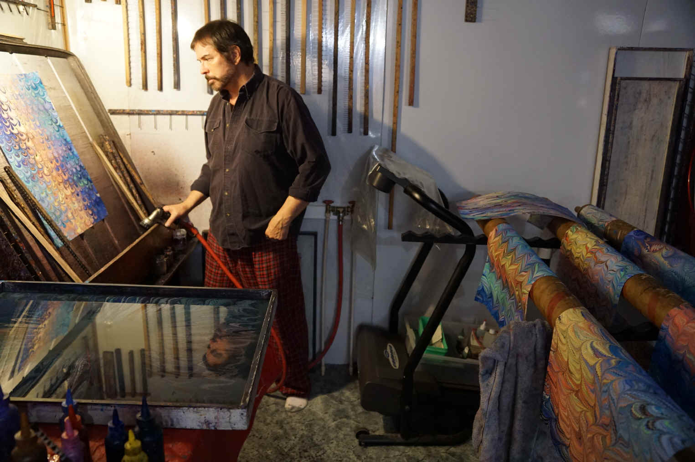
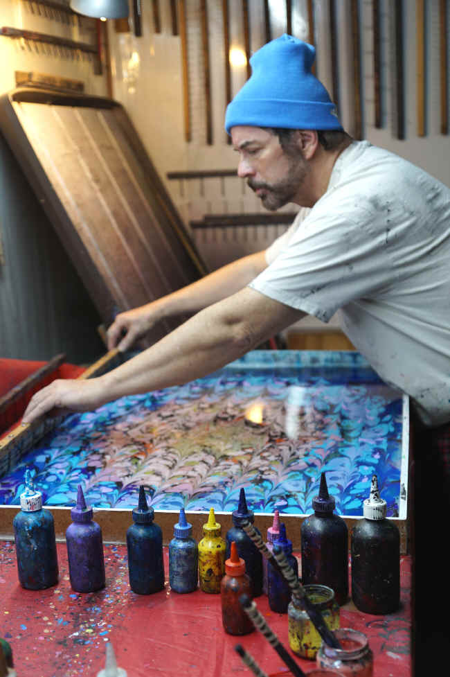
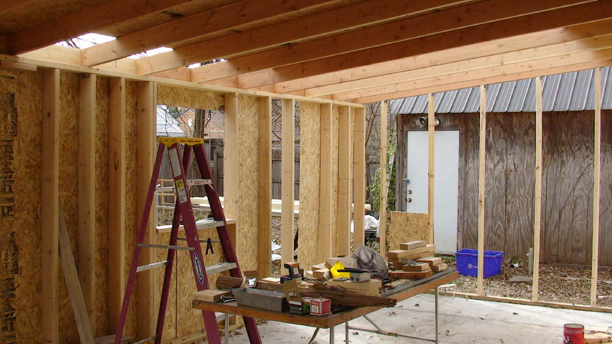
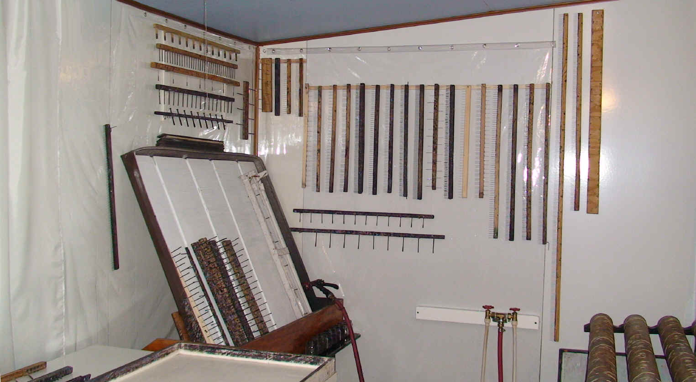
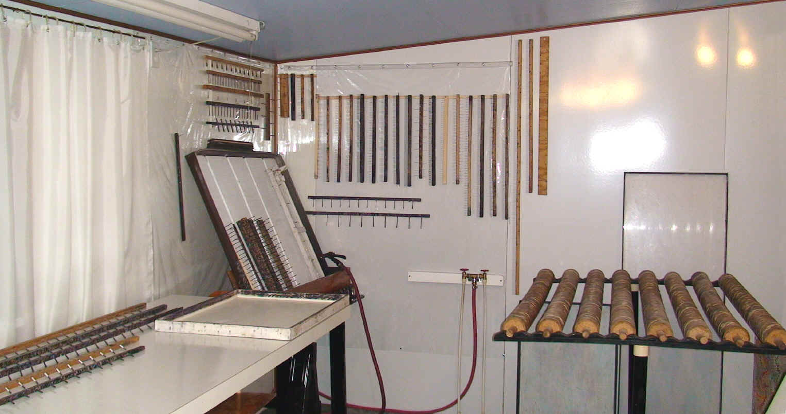

How Marbling is done.
A Short Description of the Marbling Process
1. Some alum is dissolved in water. This is sponged onto each paper to be marbled, and the paper is allowed to dry. The alum is what will bond the color to the paper.
2. A thick liquid, referred to as the size, is made by blending a type of gelatin (carrageenan) with water.
3. The size is poured into a shallow tray.
4. Several colors of ink or paint are sprinkled onto the surface of the size. They float on the surface because they are lighter than the thickened water.
5. A stick is used to stir the floating colors if desired. Various combs and rakes may also be run through the colors to make more intricate patterns.
6. A sheet of the alum-treated paper is gently laid onto the surface of the size, and it absorbs the floating colors. Only one print can be made.
7. The paper is lifted off, rinsed, and hung up to dry.
Fabric marbling is done the same way, except for step #1: Instead of sponging the alum onto the cloth, it is soaked in the alum water, then hung up to dry, then ironed flat. After that, it can be marbled just like a sheet of paper.
In my Marbling Studio
Pictures from December 2018:
  
A few years ago I built a new room onto the back of the house
-- my future marbling room:
The finished marbling room, before it got all splattered with paint!
